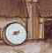

On a round ball
A workman that hath copies by, can lay
An Europe, Afrique and an Asia,
And quickly make that, which was nothing, All.
— John Donne (1571?–1631), Valediction: Of Weeping

Though §4 was a little vague
in saying “the library asks the mushroom if it would like to react”,
something basic was happening in Inform terms: the object
InformLibrary was sending the message before to the
object mushroom. Much more on how actions take place in
§6, but here is roughly what the library does
if the player types “eat mushroom”:
if (mushroom.before() == false) {
remove mushroom;
if (mushroom.after() == false)
print "You eat the mushroom. Not bad.^";
}
The library sends the message before to ask the
mushroom if it minds being eaten; then, if not, it consumes
the mushroom; then it sends the message after to ask if
the mushroom wishes to react in some way; then, if not, it prints
the usual eating-something text. In response to the messages before
and after, the mushroom is expected to reply either true,
meaning “I'll take over from here”, or false,
meaning “carry on”.
Most of the other properties in §4 are also receiving messages. For example, the message
mushroom.description();
is sent when the player tries to examine the
mushroom: if the reply is false then the library prints
“You see nothing special about the speckled mushroom.”
Now the mushroom was set up with
description
"The mushroom is capped with blotches, and you aren't at all
sure it's not a toadstool.",
which doesn't look like a rule for receiving a message,
but it is one all the same: it means “print this text out, print
a new-line and reply true”. A more complicated
rule could have been given instead, as in the following elaboration
of the stone-cut steps in ‘Ruins’:
description [;
print "The cracked and worn steps descend into a dim chamber.
Yours might ";
if (Square_Chamber hasnt visited)
print "be the first feet to tread";
else print "have been the first feet to have trodden";
" them for five hundred years. On the top step is inscribed
the glyph Q1.";
],
visited is an attribute which is currently held
only by rooms which the player has been to. The glyphs will come into
the game later on.
The library can send out about 40 different kinds
of message, beforeand description being
two of these. The more interesting an object is, the more ingeniously
it will respond to these messages. An object which ignores all incoming
messages will be lifeless and inert in play, like a small stone.
▲
Some properties are just properties, and don't receive messages.
Nobody ever sends a name message, for instance:
the name property is just what it seems to be, a list
of words.
· · · · ·
So the library is sending out messages to your objects all the time during play. Your objects can also send each other messages, including “new” ones that the library would never send. It's sometimes convenient to use these to trigger off happenings in the game. For example, one way to provide hints in ‘Ruins’ might be to include a macaw which squawks from time to time, for a variety of reasons:
Object -> macaw "red-tailed macaw"
with name 'red' 'tailed' 'red-tailed' 'macaw' 'bird',
initial "A red-tailed macaw eyes you from an upper branch.",
description "Beautiful plumage.",
before [;
Take: "The macaw flutters effortlessly out of reach.";
],
squawk [ utterance;
if (self in location)
print "The macaw squawks, ~", (string) utterance,
"! ", (string) utterance, "!~^^";
],
has animate;
(For the final version of ‘Ruins’ the
designer thought better of the macaw and removed it, but it still
makes a good example.) We might then, for instance, change the after
rule for dropping the mushroom to read:
Drop: macaw.squawk("Drop the mushroom");
"The mushroom drops to the ground, battered slightly.";
so that the maddening creature would squawk “Drop
the mushroom! Drop the mushroom!” each time this was done. At
present it would be an error to send a squawk message to any object
other than the macaw, since only the macaw has been given a rule
telling it what to do if it receives one.
· · · · ·
In most games there are groups of objects with certain rules in common, which it would be tiresome to have to write out many times. For making such a group, a class definition is simpler and more elegant. These closely resemble object definitions, but since they define prototypes rather than actual things, they have no initial location. (An individual tree may be somewhere, but the concept of being a tree has no particular place.) So the ‘header’ part of the definition is simpler.
For example, the scoring system in ‘Ruins’ works as follows: the player, an archaeologist of the old school, gets a certain number of points for each ‘treasure’ (i.e., cultural artifact) he can filch and put away into his packing case. Treasures clearly have rules in common, and the following class defines them:
Class Treasure
with cultural_value 5, photographed_in_situ false,
before [;
Take, Remove:
if (self in packing_case)
"Unpacking such a priceless artifact had best wait
until the Carnegie Institution can do it.";
if (self.photographed_in_situ == false)
"This is the 1930s, not the bad old days. Taking an
artifact without recording its context is simply
looting.";
Photograph:
if (self has moved)
"What, and fake the archaeological record?";
if (self.photographed_in_situ)
"Not again.";
],
after [;
Insert:
if (second == packing_case)
{ score = score + self.cultural_value;
"Safely packed away.";
}
Photograph: self.photographed_in_situ = true;
];
(The packing case won't be defined until
§12, which is about containers.)
Note that self is a variable, which always means
“whatever object I am”. If we used it in the definition
of the mushroom it would mean the mushroom: used here, it means
whatever treasure happens to be being dealt with. Explanations
about Insert and Remove will come later
(in §12). The action Photograph
is not one of the standard actions built in to the library, and will
be added to ‘Ruins’ in the next section.
An object of the class Treasure automatically
inherits the properties and attributes given in the class definition.
Here for instance is an artifact which will eventually be found in
the Stooped Corridor of ‘Ruins’:
Treasure -> statuette "pygmy statuette"
with name 'snake' 'mayan' 'pygmy' 'spirit' 'precious' 'statuette',
description
"A menacing, almost cartoon-like statuette of a pygmy spirit
with a snake around its neck.",
initial "A precious Mayan statuette rests here!";
From Treasure, this statuette inherits
a cultural_value score of 5 and the rules about taking
and dropping treasures. If it had itself set cultural_value
to 15, say, then the value would be 15, because the object's actual
definition always takes priority over anything the class might have
specified. Another of the five ‘Ruins’ treasures, which
will be found in the Burial Shaft, has a subtlety in its definition:
Treasure -> honeycomb "ancient honeycomb"
with article "an",
name 'ancient' 'old' 'honey' 'honeycomb',
description "Perhaps some kind of funerary votive offering.",
initial
"An exquisitely preserved, ancient honeycomb rests here!",
after [;
Eat: "Perhaps the most expensive meal of your life.
The honey tastes odd, perhaps because it was used to
store the entrails of the Lord buried here, but still
like honey.";
],
has edible;
The subtlety is that the honeycomb now has two
after rules: a new one of its own, plus the existing
one that all treasures have. Both apply, but the new one happens
first.
▲▲
So comparing cultural_value and after, there
seems to be an inconsistency. In the case of cultural_value,
an object's own given value wiped out the value from the class,
but in the case of after, the two values were joined
up into a list. Why? The reason is that some of the library's properties
are “additive”, so that their values accumulate into
a list when class inheritance takes place. Three useful examples are
before, after and name.
▲▲
Non-library properties you invent (like squawk or
cultural_value) will never be additive, unless you declare
them so with a directive like
Property additive squawk;
before squawk is otherwise mentioned.
(Or you could imitate similar kinds of inheritance using the
superclass operator.)
•
REFERENCES
See ‘Balances’ for an extensive use of message-sending.
The game defines several complicated classes, among them the white
cube, spell and scroll classes.
•‘Advent’
has a treasure-class similar to this one, and uses class definitions
for the many similar maze and dead-end rooms, as well as the sides
of the fissure.
•‘Toyshop’
contains one easy class (the wax candles) and one unusually hard one
(the building blocks).
•Class definitions can be worthwhile
even when as few as two objects use them, as can be seen from the two
kittens in ‘Alice Through the Looking-Glass’.